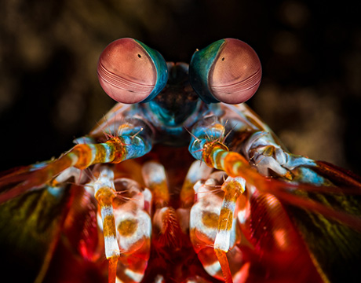
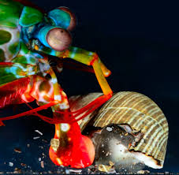

Fatos sobre o Stomatopoda:
O que são?

Stomatopoda são uma espećie de crustáceo, de nome científico Odontodactylus scyllarus, que vivem em águas quentes e rasas e tipicamente crescem entre 15 e 30cm.
Uma de suas principais características é a segunda pata torácica, que é modificada em apêndice subquelado, lembrando uma pata de louva-a-deus.
| Reino: | Animalia |
| Filo: | Arthropoda |
| Subfilo: | Crustacea |
| Classe: | Malacostraca |
| SubClasse: | Hoplocarida |
| Ordem: | Stomatopoda |
Eles vêem um arco-íris!
Essas incríveis criaturas possuem 16 cones receptores de cores. Isso são mais do que 5 vezes o número de cones receptivos que o ser humano possui.
É com o auxílio dessa visão muito apurada que permite interpretar polarização no espectro ultravioleta e infravermelho que o Stomatopoda é capaz de caçar suas presas.
O Muhammad Ali dos mares!
Outra característica fascinante sobre essa pequena criatura é relacionada a forma de caçar.
O Stomatopoda é uma criatura exclusivamente carnívora que se alimenta de camarões, caranguejos, moluscos, peixes e até mesmo outros da mesma ordem.
Para ser capaz de abater suas presas, esse animal possui em suas patas dianteiras sua principal forma de ataque e ser atingido por essas patas pode ser similar a receber um soco a 80km/h. Imagine, uma criatura de, no máximo, 30cm, com um soco com essa potência.